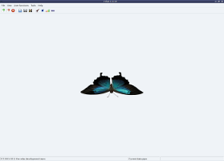
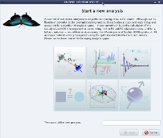
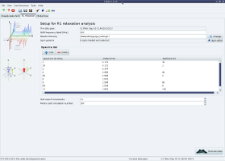
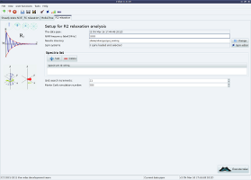
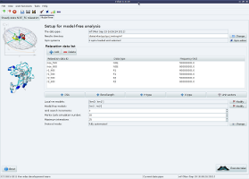
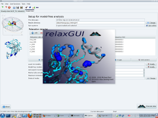

Program features
Literature
The primary references for the program relax are d'Auvergne and Gooley, 2008a and d'Auvergne and Gooley, 2008b.
Other literature related to the improved model-free analysis used within relax, which can nevertheless be applied to other techniques, include model-free model selection (d'Auvergne and Gooley, 2003; Chen et al., 2004), model-free model elimination (d'Auvergne and Gooley, 2006), the theory (d'Auvergne and Gooley, 2007) behind the new model-free optimisation protocol (d'Auvergne and Gooley, 2008b), and the hybridisation of different models (Horne et al., 2007; d'Auvergne and Gooley, 2008b). Most of these details can be found in the PhD thesis of d'Auvergne, 2006.
Supported NMR theories
The following NMR relaxation data analysis techniques are currently supported by relax:
- Model-free analysis (Lipari and Szabo, 1982a; Lipari and Szabo, 1982b; Clore et al., 1990)
- Reduced spectral density mapping (Farrow et al., 1995, Lefevre et al., 1996)
- Consistency testing - the validation of multiple field NMR relaxation data (Morin and Gagné, 2009)
- Exponential curve fitting (to find the R1 and R2 NMR relaxation rates)
- Steady-state NOE calculation
- Determination of absolute stereochemistry of flexible molecules (using isotropic and anisotropic NMR parameters (NOE, ROE, and RDC) combined with MD simulation or simulated annealing, and ORD)
- The N-state model for investigating domain motions
- The frame order theory
- Conformational analysis of paramagnetically tagged sugars
- Analysis of RDCs and PCSs using ensemble of structures (the N-state model of dynamics)
Data analysis tools
The following tools are implemented as modular components to be used by any data analysis technique:
- Numerous high-precision optimisation algorithms
- Model selection (d'Auvergne and Gooley, 2003; Chen et al., 2004)
- Akaike's Information Criteria (AIC)
- Small sample size corrected AIC (AICc)
- Bayesian or Schwarz Information Criteria (BIC)
- Bootstrap model selection
- Single-item-out cross-validation (CV)
- Hypothesis testing ANOVA model selection (only the model-free specific technique of Mandel et al., 1995 is supported)
- Monte Carlo simulations (error analysis for all data analysis techniques)
- Model elimination - the removal of failed models prior to model selection (d'Auvergne and Gooley, 2006)
Data visualisation
The results of an analysis, or any data input into relax, can be visualised using a number of programs:
- MOLMOL - 1D data can be mapped onto a structure either by the creation of MOLMOL macros or by direct control of the program.
- PyMOL - visualisation of diffusion tensors and cone models by using the software as a Python package.
- Grace - any 2D data can be plotted.
- OpenDX - The chi-squared space of models with three parameters can be mapped and 3D images of the space produced.
Interfacing with other programs
relax can create the input files, execute in-line, and then read the output of the following programs. These programs can be
used as optimisation engines replacing the minimisation algorithms built into relax:
The user interfaces (UI)
relax can be used through the following UIs:
- The prompt - this is the primary interface of relax. Rather than reinventing a new command language, relax's interface is the powerful Python prompt. This gives the power user full access to a proven programming language.
- Scripting - this provides a more powerful and flexible framework for controlling the program. The script will be executed as Python code enabling advanced programming for automating data analysis. All the features available within the prompt environment are accessible to the script.
- Graphical User Interface (GUI) - this offers a simple and easy way of performing data analysis. Calculation of steady-state NOE, curve fitting of R1 and R2 NMR relaxation rates as well as model-free analysis are supported. Most parameters used for analysis can be set manually, but system standards are set accoring to d'Auvergne and Gooley, 2008b. In addition, the graphical user interface has a fully automated model-free analysis feature that performs analysis without any user intervention after loading NOE, R1 and R2 data.
The primary references for relax and the UIs are d'Auvergne and Gooley, 2008a and d'Auvergne and Gooley, 2008b, whereas the primary reference for the GUI is Bieri et al., 2011.
relax GUI
To start relax with the graphical interface, type:
$ relax -g
Screenshots
Some screenshots of the second version of the GUI (for the relax 1.3.14 release) are:

relax starting interface
|

The analysis selection wizard
|

Steady-state NOE analysis
|

R1 analysis
|

R2 analysis
|

Model-free analysis
|

The relax controller
|

Spin viewer window
|

Results viewer window
|

Pipe editor window
|

relax prompt window
|

About GUI screen
|

About relax screen
|


{kind=link}
{kind=link}
{kind=link}
{kind=link}
{kind=link}
{kind=link}